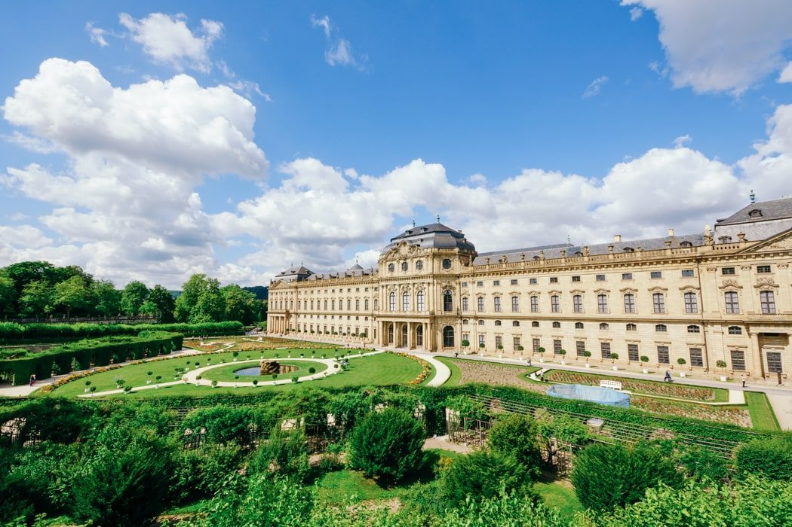
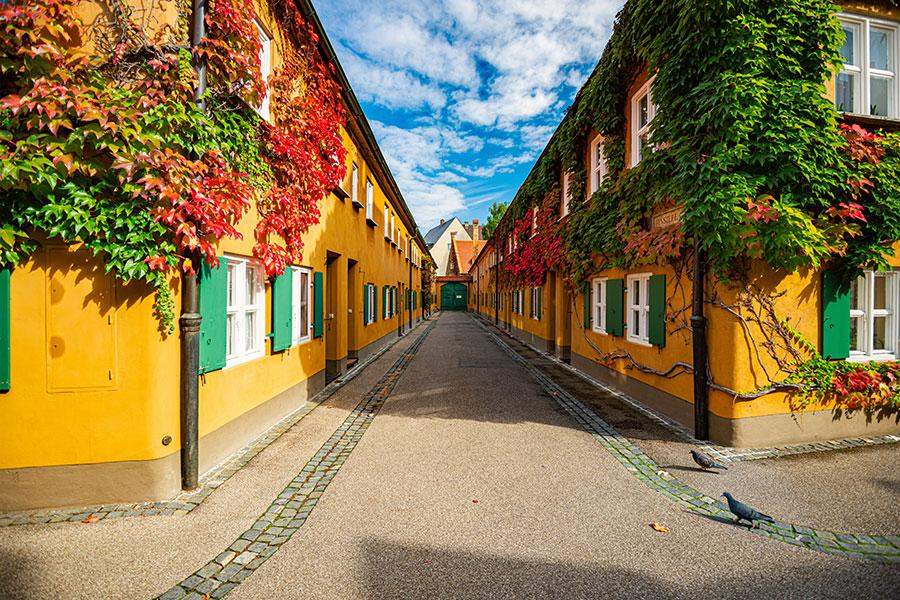
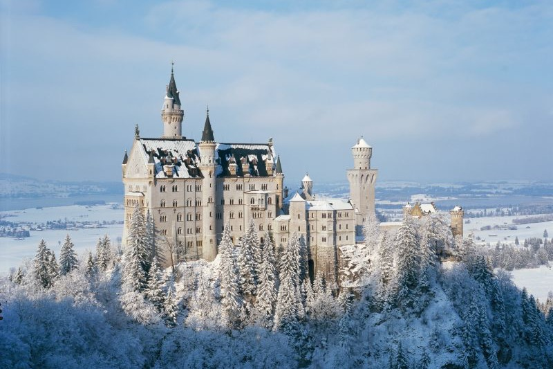

01 / TOP SIGHTS
Move your mouse over a picture to see where it is.



WÜRZBURG RESIDENCE
The Residence was built between 1720 and 1744 for the prince-bishops of Würzburg. Inside you can see the huge staircase with the ceiling fresco by Giovanni Battista Tiepolo. Behind the palace there is a beautiful court garden, which is free to visit.
FUGGEREI
The rich merchant Jakob Fugger founded the Fuggerei in 1521 for the poor people of Augsburg. It is the oldest social housing estate in the world that is still in use. About 150 people live there today and pay a rent of only 0.88 euros per year. In the museum you can see what an apartment looked like 500 years ago.
NEUSCHWANSTEIN CASTLE
King Ludwig II started to build Neuschwanstein in 1869, but he died in 1886 before it was finished. Today more than one million people visit the castle every year. You can only go inside with a guided tour. For the famous view, walk to the Marienbrücke, a bridge high above a gorge behind the castle.
02 / OPENING HOURS & TICKETS
Opening hours and prices for 2026. Please check the official websites before you go, because times can change.
| Sight | Town | Opening hours | Adult ticket | Website |
|---|---|---|---|---|
| Würzburg Residence | Würzburg | April to October: 9:00 - 18:00 November to March: 10:00 - 16:30 |
€10 | residenz-wuerzburg.de |
| Town wall walk | Rothenburg ob der Tauber | Always open | free | rothenburg.de |
| Fuggerei | Augsburg | April to September: 9:00 - 20:00 October to March: 9:00 - 18:00 |
€8 | fugger.de |
| Neuschwanstein Castle | Schwangau, near Füssen | Summer (28 March to 15 October): 9:00 - 18:00 Winter: 10:00 - 16:00 |
€21 | neuschwanstein.de |
| Under 18? The Residence and Neuschwanstein are free for you! | ||||